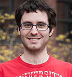

News Archives : 2015 : Four MCO Graduate Students Earn NSF Fellowships
by Mary Parker
April 28, 2015
First year MCO graduate students Georgia Squyres and Nico Wagner, and second year students Dalila Ordonez from the Feany Lab, and Zachary Werkhoven from the de Bivort Lab have all won research fellowships from the National Science Foundation (NSF) for 2015. Their fellowships will allow them to continue their graduate work at Harvard for the next year.
Georgia Squyres earned a BA in biophysics from Columbia University before joining the MCO program in 2014. Her previous research work includes the study of bacterial biofilms and single molecule studies using atomic force microscopy. Her current research interests include using the techniques and principles of biophysics to understand bacterial organization at various scales, from subcellular processes to the formation of large microbial communities.

Nico Wagner completed his undergraduate physics, cellular & molecular biology, and astrophysics degrees at the University of Michigan and joined the MCO program in 2014. In his undergraduate work, he studied the effects of inorganic polyphosphate on protein stability and worked on elucidating polyphosphate’s protective mechanism. Currently, he is rotating with Victoria D’Souza and plans on joining the lab in May. His project will require him to solve RNA structures related to various diseases.

Dalila Ordonez is researching α-synucleinopathies, a diverse group of neurodegenerative disorders, which share a common pathologic lesion comprised of aggregates of α-synuclein protein in the cytoplasm of selectively vulnerable neurons and glia. α-synuclein is a cytoplasmic protein abundant in the presynaptic terminal of neurons. Although the function of α-synuclein is not well understood, multiple studies suggest that the protein plays a role in regulating the supply of synaptic vesicles in presynaptic terminals. The Feany Lab is currently using genetic loss/gain of function techniques and biochemical approaches to test the hypothesis that α-synuclein toxicity occurs through dysregulation of the actin microfilament network with subsequent disruption of normal mitochondrial dynamics.
Zachary Werkhoven wants to know whether or not the neural circuits that generate an individual's bias in one behavior, such as movement toward or away from light, will have any measurable effect on their other behavioral biases, such as movement toward or away from gravity. To address this, he’s developing an approach to conduct high-dimensional behavioral profiling of flies that have very little genetic diversity. This rich behavioral data will be used to measure correlations that arise between behaviors of the same individual. From this approach, the de Bivort Lab researchers hope to gain insight into whether the neural circuitry that generates these behaviors is very discrete or if these circuits share common elements. Previous research has identified certain behaviors that tend to occur as correlated suites of behavior, such as boldness or shyness, that are found in many vertebrate and invertebrate species. This study will expand on those findings by capturing a much larger portion of an individual's behavioral repertoire and by investigating the relationship between correlated sets of behavior and the underlying neural architecture.